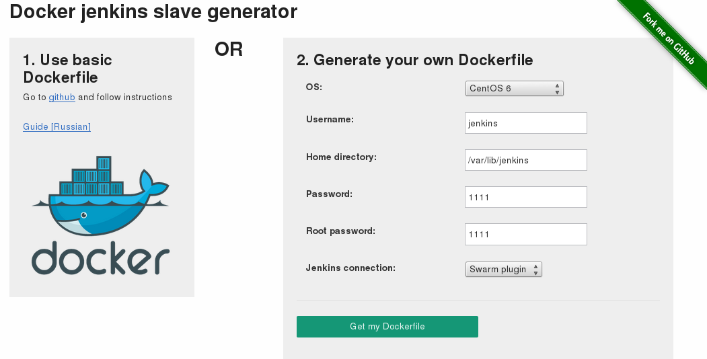
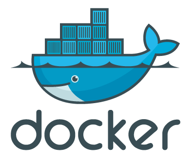

tl;dr: Сервіс для генерації Dockerfile для Jenkins-слейвів доступний і працює тут: http://docker-jenkins-slave.herokuapp.com/ .

Docker jenkins slave
Початок історії тут: Використання Docker-контейнерів як Jenkins-нод.
Abstract: Якщо ви хочете збирати свій проєкт під різні оточення (наприклад, Jenkins встановлено на Arch Linux, а ви хочете зібрати RPM під CentOS 6) через Jenkins, але не бажаєте використовувати віртуальні машини, що призводить до неефективного витрачання RAM і CPU, використання Docker — чудова ідея.
У цьому репозиторії: https://github.com/rrader/docker-jenkins-slave зараз доступні правила збірки для:

- CentOS 5
- CentOS 6
- Suse 12
- Debian 6
Передбачається, що у вас уже встановлені Docker та Jenkins.
-
Встановіть Swarm Plugin у ваш Jenkins (він дозволяє слейвам додаватися до Jenkins автоматично через API)
-
$ git clone git@github.com:rrader/docker-jenkins-slave.git; cd docker-jenkins-slave -
Перейдіть у папку з правилами для потрібної системи:
$ cd centos6 -
Зберіть образ:
$ sudo bash build.sh
Тепер, коли є зібраний образ, ви можете додати скільки завгодно нод цього типу:
$ sudo bash add_slave.sh SlaveName
Після цього призначте мітку (label) для вашої задачі в Jenkins: docker-<tagname>. Точні назви тегів для вибраної OS слейва можна подивитися на вікі: https://github.com/rrader/docker-jenkins-slave/wiki/Tags
- centos6 :
centos6.4 - centos5 :
centos5.4 - suse12 :
suse12.1 - squeeze :
debian6
Docker jenkins slave Generator
Вийшла початкова версія генератора jenkins slave, його мета — генерувати Dockerfile саме під ваші потреби, із встановленими потрібними пакетами та іншим добром.
Зараз реалізовано лише невелику частину запланованого функціоналу: можна налаштувати username, home directory та паролі для root/user.
Сервіс розгорнуто тут: http://docker-jenkins-slave.herokuapp.com/
Вихідний код веб-сервісу на GitHub: https://github.com/rrader/docker-jenkins-slave-service
Будь-які пропозиції та пулл-реквести вітаються!
Цей пост перенесено зі старого блогу antigluk.blogspot.com.